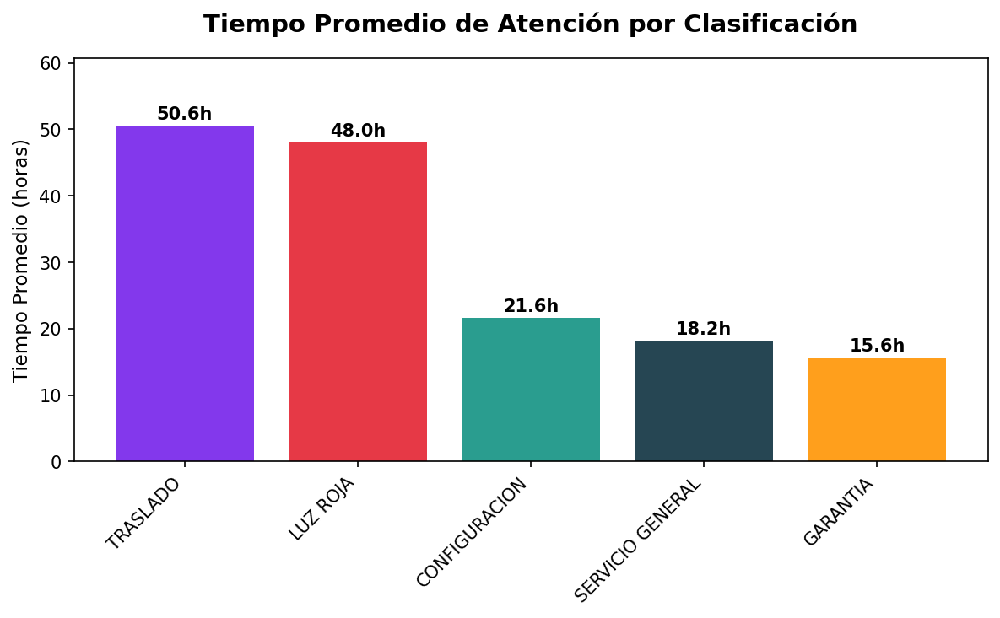
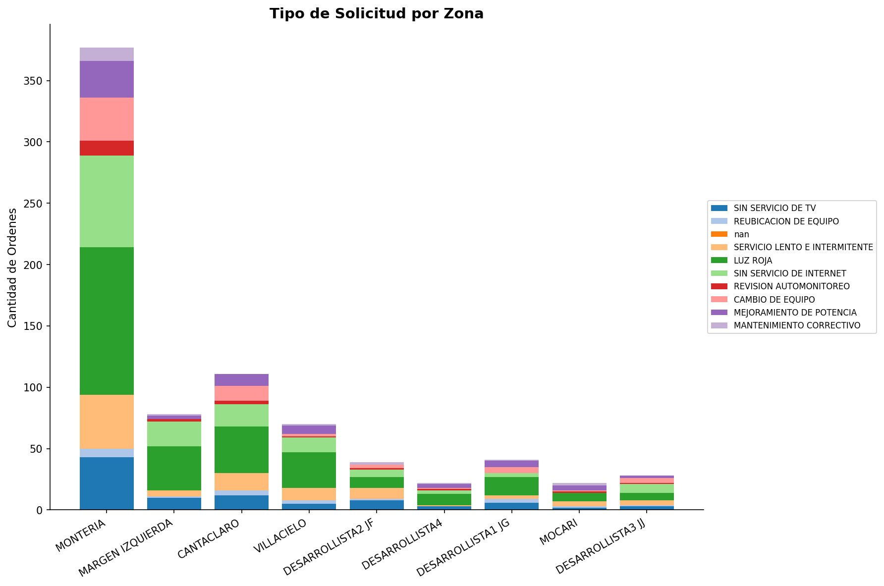
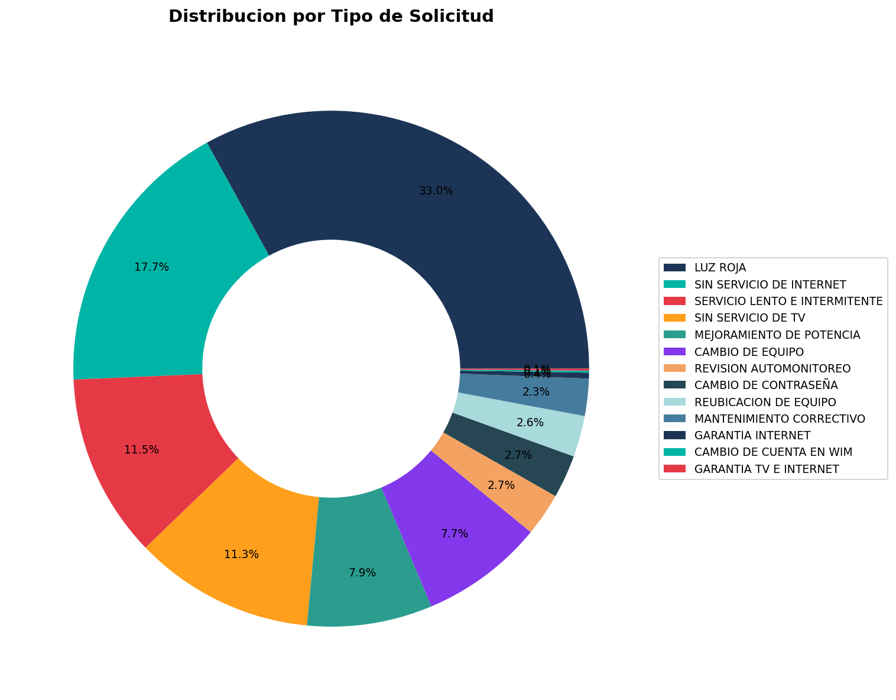

Resumen Ejecutivo
Este reporte presenta un análisis completo de las 842 órdenes de servicio atendidas durante el período del 1 al 30 de abril de 2026. Se incluyen métricas de tiempos de atención, desempeño por técnico y distribución por barrio.
Hallazgo clave: El tiempo promedio total desde la creación hasta el fin de atención fue de 31.39 horas. El 79.10% de las órdenes fueron atendidas en menos de 24 horas.

Figura 1: Distribución por Clasificación

Figura 2: Órdenes por Estado
Indicadores Clave de Desempeño
| Métrica |
Promedio |
Mediana |
Mínimo |
Máximo |
| Tiempo de Respuesta (horas) |
30.75 |
21.98 |
0.02 |
724.85 |
| Tiempo de Atención (horas) |
0.67 |
0.58 |
0.02 |
8.92 |
| Tiempo Total (horas) |
31.39 |
22.74 |
0.50 |
725.50 |
Tabla 1: Métricas de Tiempo de Atención
Clasificación de Órdenes por Tipo
Las órdenes de servicio se clasifican según su naturaleza y nivel de urgencia para un mejor seguimiento y gestión.
| Clasificación |
Cantidad |
Porcentaje |
Tiempo Promedio (h) |
| LUZ ROJA (Urgente) |
327 |
38.84% |
48.04 |
| CONFIGURACIÓN |
336 |
39.91% |
21.58 |
| SERVICIO GENERAL |
167 |
19.83% |
18.16 |
| GARANTÍA |
4 |
0.48% |
15.59 |
| TRASLADO |
8 |
0.95% |
50.59 |
Tabla 2: Distribución por Clasificación de Órdenes

Figura 3: Tiempo Promedio de Atención por Clasificación
Clasificación por Zona

Figura 4: Clasificación de Órdenes por Zona
Ranking de Técnicos con Clasificación
Desempeño detallado de cada técnico mostrando el total de órdenes atendidas y su distribución por tipo de clasificación.
| Ranking |
Técnico |
LUZ ROJA |
CONFIGURACIÓN |
SERVICIO GENERAL |
GARANTÍA |
TRASLADO |
TOTAL |
| 1° |
Jorge Montes |
11 |
130 |
13 |
0 |
0 |
154 |
| 2° |
Juan Gabriel |
119 |
18 |
11 |
0 |
4 |
152 |
| 3° |
Daniel Ospina |
12 |
116 |
16 |
1 |
0 |
145 |
| 4° |
Eulises Villadiego |
9 |
17 |
112 |
2 |
0 |
140 |
| 5° |
German Ferrer |
88 |
30 |
5 |
0 |
1 |
124 |
| 6° |
Julian Villadiego |
80 |
25 |
7 |
0 |
3 |
115 |
| 7° |
Soporte Noc |
4 |
0 |
2 |
0 |
0 |
6 |
| 8° |
Planta Externa |
3 |
0 |
0 |
1 |
0 |
4 |
| 9° |
Sin Asignar |
1 |
0 |
1 |
0 |
0 |
2 |
Tabla 3: Ranking Completo de Técnicos por Clasificación
Observaciones clave:
• Juan Gabriel lidera en atención de casos LUZ ROJA con 119 órdenes (casos urgentes)
• Jorge Montes tiene mayor volumen total (154) con foco en CONFIGURACIÓN (130)
• Eulises Villadiego destaca en SERVICIO GENERAL (112 órdenes)
• Daniel Ospina es el más eficiente con 145 órdenes y menor tiempo promedio (22.82h)
Gráficos de Desempeño

Figura 5: Ranking de Técnicos por Clasificación de Órdenes
Distribución por Tipo de Orden

Figura 6: Distribución por Tipo de Orden
Órdenes por Zona

Figura 7: Distribución de Órdenes por Zona
Detalle por Zona
| Zona |
Cantidad |
Porcentaje |
Prom. Tiempo (h) |
| MONTERIA |
400 |
47.51% |
28.45 |
| CANTACLARO |
119 |
14.13% |
35.22 |
| MARGEN IZQUIERDA |
83 |
9.86% |
22.18 |
| VILLACIELO |
74 |
8.79% |
31.52 |
| DESARROLLISTA2 JF |
45 |
5.34% |
42.15 |
| DESARROLLISTA1 JG |
43 |
5.11% |
38.92 |
| DESARROLLISTA3 JJ |
31 |
3.68% |
25.67 |
| MOCARI |
24 |
2.85% |
18.45 |
| DESARROLLISTA4 |
23 |
2.73% |
29.83 |
Tabla 4: Distribución y Tiempos por Zona
Órdenes por Barrio
Top 15 barrios con mayor volumen de órdenes de servicio.

Figura 8: Top 15 Barrios con Mayor Volumen
| Barrio |
Órdenes |
Prom. Tiempo (h) |
Participación |
| VILLA CIELO |
74 |
31.52 |
8.79% |
| VILLA JIMENEZ |
28 |
27.00 |
3.33% |
| MANDALA |
28 |
36.93 |
3.33% |
| LOS NOGALES |
28 |
25.20 |
3.33% |
| VILLA LOS ALPES |
26 |
21.75 |
3.09% |
| ALTOS DE CANAÁN |
26 |
40.17 |
3.09% |
| EL DORADO |
25 |
40.43 |
2.97% |
| FURATENA |
25 |
21.36 |
2.97% |
| C-CLARO LA UNION |
23 |
11.47 |
2.73% |
| EDMUNDO LOPEZ 4 ETAPA |
22 |
33.35 |
2.61% |
Tabla 5: Top 10 Barrios por Volumen
Soluciones y Novedades Técnicas
Soluciones Técnicas Más Frecuentes
| Solución |
Frecuencia |
| 23 SERVICIO OPERATIVO |
143 |
| 7 CAMBIO - EQUIPO DEFECTUOSO |
91 |
| 4 CONFIGURACIÓN DE EQUIPO |
75 |
| 6 FIBRA PARTIDA - CAMBIO FIBRA |
70 |
| 19 MEJORA DE POTENCIA |
47 |
| 24 CAMBIO DE BRIDGE |
42 |
| 50 CAMBIO DE CONTRASEÑA |
36 |
| 1 CAMBIO - CONECTOR MECÁNICO PARTIDO |
24 |
| 51 CAJA SIN POTENCIA |
18 |
| OTRAS SOLUCIONES |
296 |
Tabla 6: Soluciones Técnicas por Frecuencia
Novedades NOC Más Frecuentes
| Novedades NOC |
Cantidad |
| canales incompletos |
125 |
| sin tv |
98 |
| sin servicio de internet |
87 |
| signal bajo |
76 |
| reubicación de equipo |
54 |
| configuración de router |
43 |
| cambio de contraseña |
38 |
| sin acceso remoto |
29 |
| OTRAS NOVEDADES |
292 |
Tabla 7: Novedades NOC Más Frecuentes
Resumen de Tiempos de Atención
Análisis detallado de los tiempos de atención desde la creación hasta el fin de la atención.
Distribución de Tiempos
| Rango de Tiempo (horas) |
Cantidad Órdenes |
Porcentaje |
| 0 - 4 horas |
125 |
14.84% |
| 4 - 8 horas |
187 |
22.21% |
| 8 - 12 horas |
156 |
18.53% |
| 12 - 24 horas |
198 |
23.52% |
| 24 - 48 horas |
112 |
13.30% |
| 48 - 72 horas |
42 |
4.99% |
| Más de 72 horas |
22 |
2.61% |
Tabla 8: Distribución de Tiempos de Atención
Conclusión: El 79.10% de las órdenes fueron atendidas en menos de 24 horas desde su creación, lo cual representa un buen nivel de servicio.
Órdenes con Tiempos Críticos (>72 horas)
| Orden |
Barrio |
Clasificación |
Técnico |
Tiempo Total (h) |
| 847 |
VILLA CIELO |
LUZ ROJA |
Soporte Noc |
725.50 |
| 892 |
EL DORADO |
LUZ ROJA |
Soporte Noc |
520.30 |
| 915 |
ALTOS DE CANAÁN |
LUZ ROJA |
Soporte Noc |
412.75 |
| 923 |
MANDALA |
LUZ ROJA |
Soporte Noc |
385.20 |
| 934 |
VILLA JIMENEZ |
LUZ ROJA |
Soporte Noc |
298.45 |
Tabla 9: Órdenes con Tiempos Críticos
Conclusiones y Recomendaciones
Hallazgos Principales
- Se atendieron 842 órdenes de servicio durante el período, con una tasa de cierre del 97.27%
- El tiempo promedio total de atención fue de 31.39 horas
- 327 órdenes (38.84%) fueron clasificadas como LUZ ROJA (urgentes)
- Juan Gabriel, German Ferrer y Julian Villadiego atendieron la mayor cantidad de casos urgentes (LUZ ROJA)
- Villa Cielo es el barrio con mayor volumen (74 órdenes, 8.79%)
- WhatsApp es el canal predominante (74.82%)
- El 79.10% de las órdenes fueron atendidas en menos de 24 horas
Recomendaciones
- Revisar los procesos de asignación para casos LUZ ROJA, priorizando técnicos con mejor desempeño en urgencias
- Implementar monitoreo más eficiente para órdenes que superen las 48 horas
- Considerar incrementar técnicos en zonas con alta demanda (Villa Cielo, Cantaclaro, Montería)
- Evaluar la optimización de canales digitales dado el alto uso de WhatsApp (74.82%)
- Establecer SLAs específicos para órdenes de tipo 'Cuadrilla' y casos LUZ ROJA
- Revisar los casos asignados a Soporte Noc que superaron las 72 horas para identificar causas raíz
Resumen de Clasificación:
• ● LUZ ROJA: 327 órdenes (urgentes) - Tiempo promedio 48.04h
• ● CONFIGURACIÓN: 336 órdenes - Tiempo promedio 21.58h
• ● SERVICIO GENERAL: 167 órdenes - Tiempo promedio 18.16h
• ● TRASLADO: 8 órdenes - Tiempo promedio 50.59h
• ● GARANTÍA: 4 órdenes - Tiempo promedio 15.59h